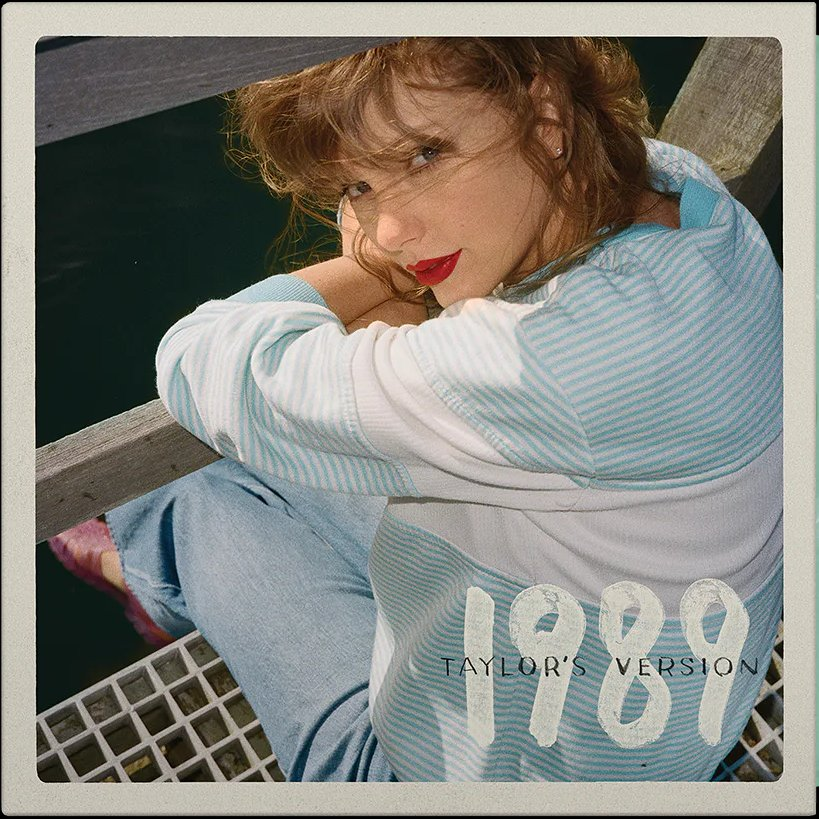

"1989 (Taylor's Version)" is a reimagined rendition of Taylor Swift's
groundbreaking 2014 album, imbued with a renewed sense of nostalgia and
authenticity. This iconic pop album takes listeners on a journey through
Swift's transition into the pop genre, exploring themes of love,
heartbreak, and self-discovery with infectious melodies and poignant
lyrics. From the euphoric anthem "Shake It Off" to the introspective
ballad "Wildest Dreams," Swift invites listeners to relive the magic of
the original era while offering fresh insights and perspectives gained
from years of growth and reflection. "1989 (Taylor's Version)" stands as
a testament to Swift's evolution as an artist and her enduring ability
to captivate audiences with her storytelling prowess and musical
prowess.
In the lead-up to the release of "1989 (Taylor's Version)," Swift
ingeniously scattered Easter eggs across her social media platforms,
music videos, and interviews, teasing fans with clues about the
reimagined album. From cryptic Instagram posts featuring references to
the number "89" to subtle nods in interviews about revisiting past eras,
Swift kept her dedicated followers eagerly deciphering hints and
speculating about what surprises awaited. Retro-themed aesthetics,
reminiscent of the original "1989" era, coupled with nostalgic callbacks
to iconic moments from that time, further fueled excitement. These
meticulously planted Easter eggs not only built anticipation for "1989
(Taylor's Version)" but also fostered a sense of camaraderie among fans,
reinforcing Swift's reputation as a master of storytelling and
engagement.